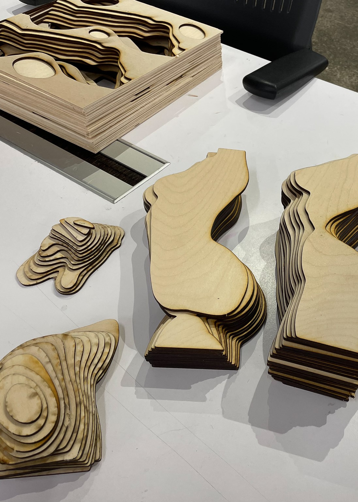
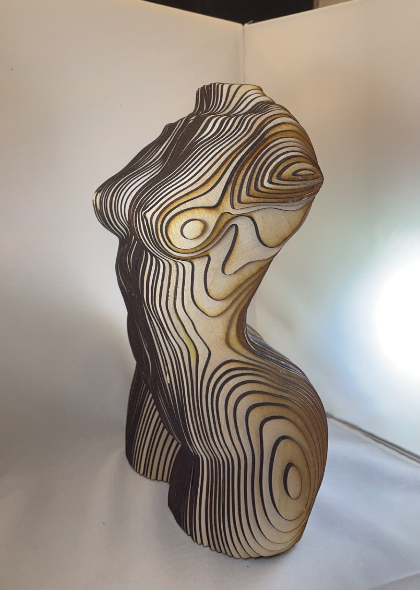
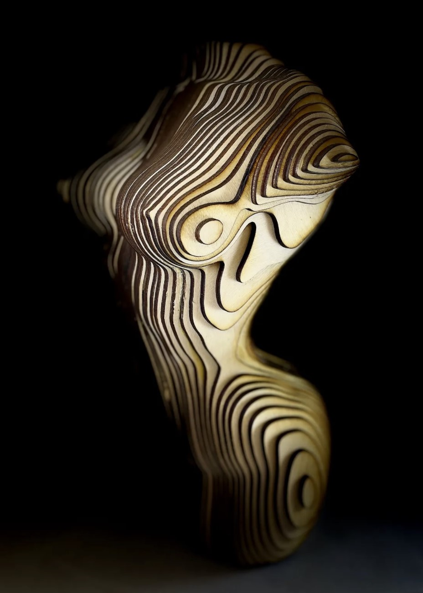

Artificial Love is a sculpture representing a future sentient woman’s body, with a floating floral bouquet. The woman is parametric, meaning in a layered, geometric, glitch style and made out of wooden slices. The piece embodies a reflection on the future of love, with a focus on how AI and humans will connect. The nature of ‘finding love’ has been forever altered by our use of dating apps that utilize AI and algorithms in the matchmaking process. Artificial Love takes these existing concepts one step further and creates a metaphor for the extremes that these processes could create.
Featured in Gaea: A Garden of the 2nd and 3rd Dimensions, an immersive exhibition showcasing pieces from international artists, it was surrounded by other artworks working within the theme of technoethics and artificial intelligence. It was held in New York City in December of 2021 and invited audiences into a liminal garden space on the cusp between the digital and physical worlds.
This piece was created by 3D modeling a woman using Autodesk Maya, then slicing the model vertically and laying out the slices on Adobe Illustrator. I then laser cut the designs onto wood and stacked each slice, using wood glue to stick the pieces together. There are a total of 93 pieces in this sculpture and took approximately 13 hours to complete.